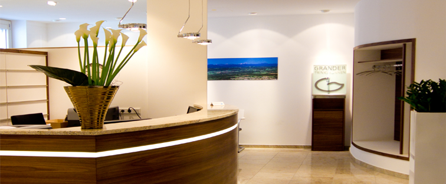

Sergei Vasilyevich Rachmaninoff
Born into a musical family, Rachmaninoff took up the piano at age four.
He graduated from the Moscow Conservatory in 1892 having already composed several piano and orchestral pieces. In 1897, following the negative critical reaction to his Symphony No. 1,
Rachmaninoff entered a four-year depression and composed little until successful therapy allowed him to complete his enthusiastically received Piano Concerto No. 2 in 1901. For the next sixteen years, Rachmaninoff conducted at the Bolshoi Theatre, relocated to Dresden, Germany, and toured the United States for the first time.